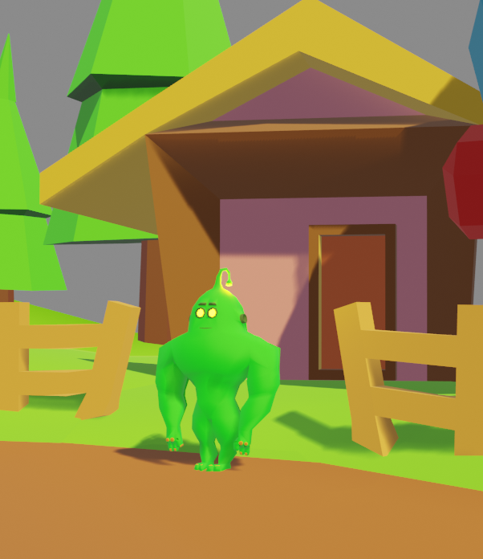

Projeto 1: Do papel ao 3d (Personagem autoral)
O que fiz: Criei o desenho a mão livre e fiz a modelagem digital completa, até um cenário simples utilizando o Blender.

Profissional autodidata focado na resolução de problemas, com transição acadêmica em tecnologia (ADS) e forte inclinação para artes visuais e modelagem 3d.
Sou estudante de Análise e Desenvolvimento de Sistemas (ADS) e entusiasta do desenvolvimento de Jogos. Aprendi a usar a operar a máquina, softwares como Blender e a programação em C de forma totalmente autodidata. Gosto de unir a arte do desenho tradicional com tecnologia digital.
O que fiz: Criei o desenho a mão livre e fiz a modelagem digital completa, até um cenário simples utilizando o Blender.

O que fiz: Desenvolvimento de projetos Lógicos para a faculdade de (ADS) exercitando estrutura de repetição e variáveis.
Ver código no GitHub.